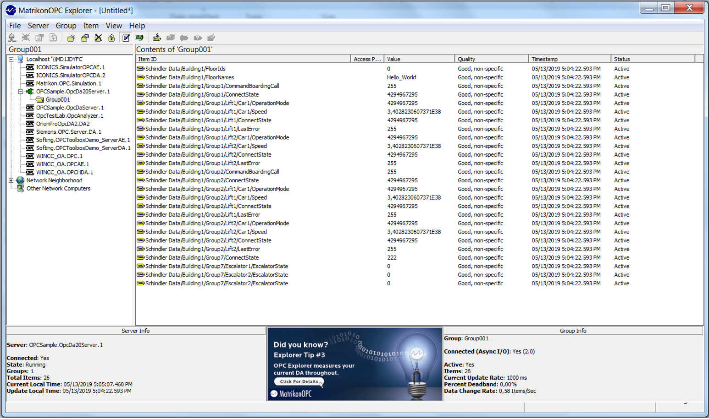
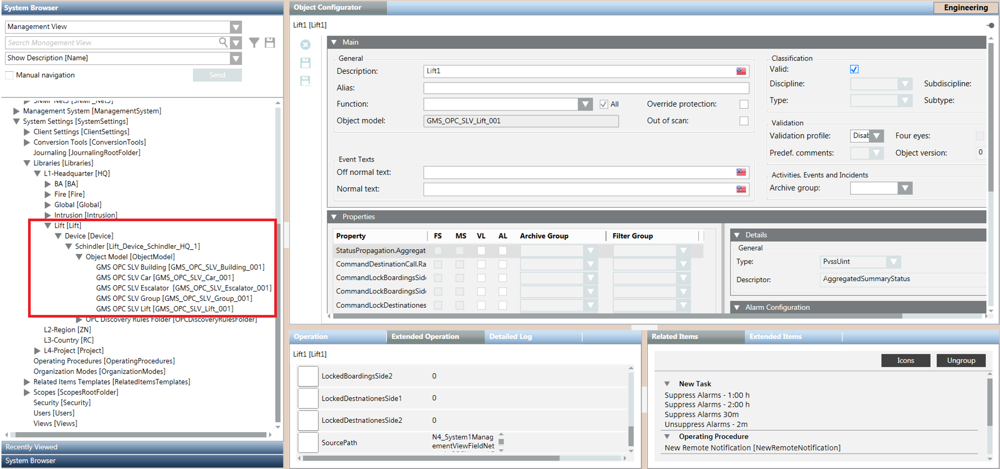
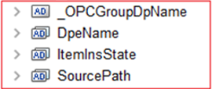
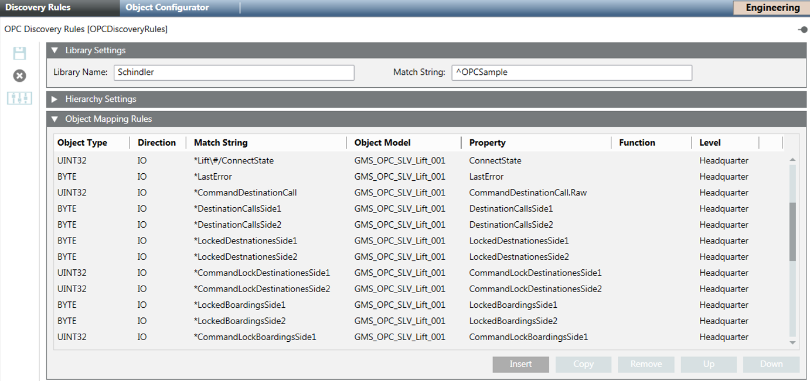
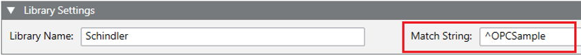
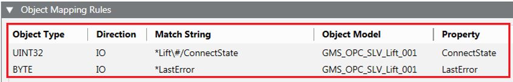
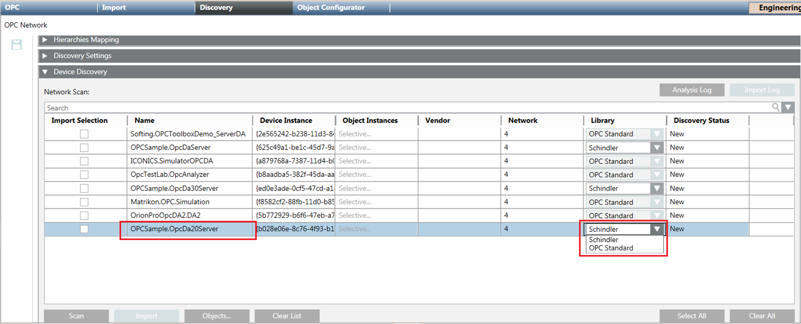
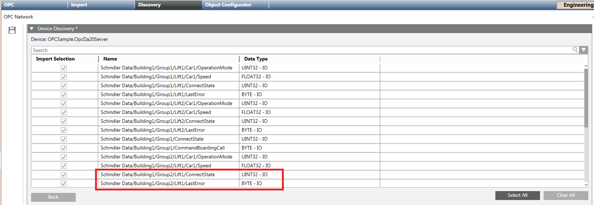
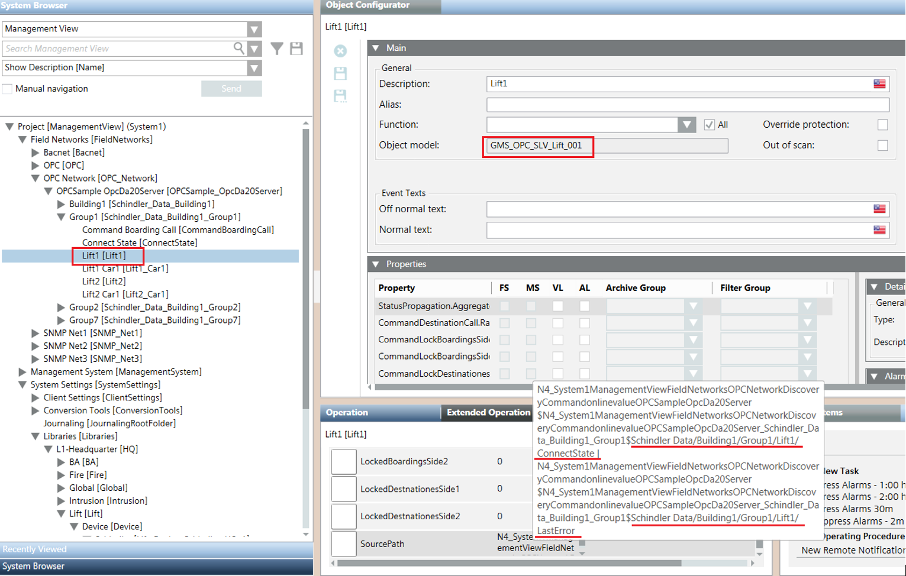

Example of OPC Discovery Rules Configuration
A local OPC server (with ProgId: OPCSample.OpcDa20Server.1) exposes some OPC items that you want to discover using Desigo CC.
You can use a standard OPC client (for example, Matrikon Explorer) to view the exposed OPC items.

In the first place you must create a library containing the object models that you want to use for creating the imported points associated to the OPC items (each point can have multiple properties associated to the different OPC items).

In this example, the following object models were created:
- GMS_OPC_SLV_Building_001
- GMS_OPC_SLV_Car_001
- GMS_OPC_SLV_Escalator_001
- GMS_OPC_SLV_Group_001
- GMS_OPC_SLV_Lift_001
NOTE: In addition to its own properties, each object model must also include the mandatory properties (see OPC Mandatory Data Type Elements Reference Table in OPC Object Models):

Once you create the required OPC object models, you can configure the OPC discovery rules.

- In the Library Settings expander, specify the following fields:
- Library Name (in this example, Schindler)
- Match String (this value is needed to identify the OPC server that exposes the OPC items that you want to model with your library).
In the following example, the matching string means each OPC server with ProgId that starts with the OPCSample string. 
- In the Object Mapping Rules expander, specify the mapping of OPC items.
Specifically, each row defines how to map an OPC item – using its address – with a DPE of the specified object model.
The following is an example of mapping rules.

Meaning of the first rule:
An OPC Item with:
- type unsigned integer of 32 bit
AND
- read/write access rights
AND
- an address containing the string: Lift<a number>/ConnectState
must be mapped to the ConnectState property of a point with GMS_OPC_SLV_Lift_001 object model.
Meaning of the second rule:
An OPC Item with:
- type byte
AND
- read/write access rights
AND
- an address containing the string: LastError
must be mapped to the LastError property of a point with GMS_OPC_SLV_Lift_001 object model.
To specify the matching string the following prefix can be used:
* Match anywhere (= contains)
^ Match beginning
$ Match ending
@ Always match
Example of the use of “\&” in a rule:
Meaning of the above rule:
An OPC item with:
- type unsigned integer of 32 bits
AND
- write access rights
AND
- an address ending with the string: STATOVARCO.COMMAND
must be mapped to the DoorForcedACK property of a point with GMS_OPC_Selesta_TerminalReader_150 object model”.
The OPC item with the following address satisfies this rule:
“VAM.5.TERMINALS.19.READERS.2.STATOVARCO.COMMAND“
Then you can scan the network for local OPC servers:
- Select the OPC Network.
- In the Discovery tab, click Scan.
- As local OPC servers are discovered, they appear in the Network Scan section. In the Device Discovery expander, the Library column relevant to the server OPCSample.OpcDa20Server.1 contains the Schindler library.
NOTE: The OPC Standard library, provided with Desigo CC, is always present.

Finally, browsing for the server objects, the following list of OPC items is displayed:

- Select all the OPC items and import them.
- In line with the library discovery rules, the OPC items highlighted in the figure above are mapped to the different properties of the node “Lift1” of type GMS_OPC_SLV_Lift_001 (see the
SourcePathproperty).
